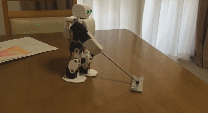
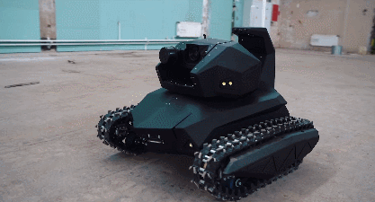
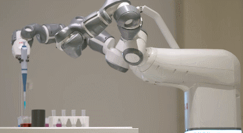
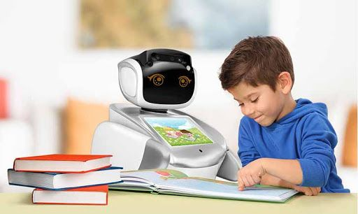
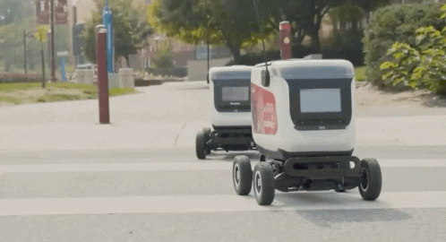
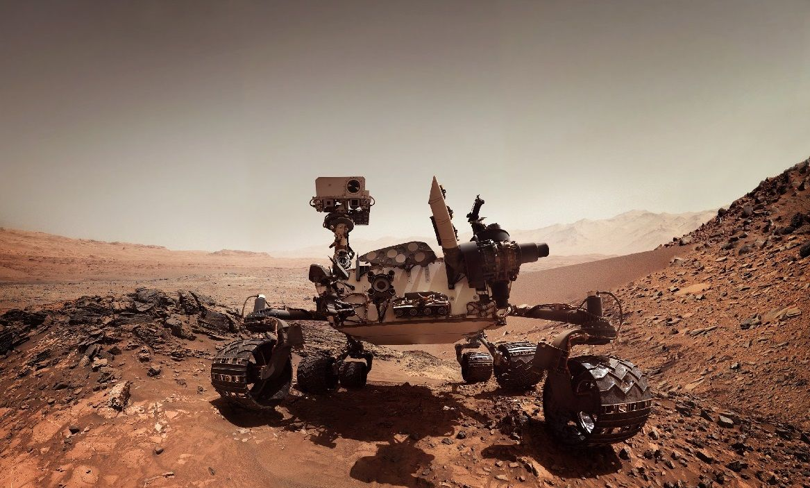

Index of Article:
A very popular application of robotics lies in the entertainment sector. Robotic toys are very captivating and attract young minds. They provide a number of features that help the child to learn and enjoy simultaneously. Such products give rise to curiosity and build interest in the technology domain.
Robots are specifically designed to reduce human efforts. With the development of technology, we have been provided with a lot of devices that are fully automated and are convenient to use. In households, robots, like cooking bots, lawn-mower, and vacuum bots, have proved to be super helpful assistants. They provide great ease and comfort to consumers by completing the task given to them quickly and effortlessly. These Robots are supported by Artificial Intelligence, a technology that allows them to practice machine learning for improved operation.
Initially, product manufacturing used to be a tedious task that required a huge workforce. It was difficult to manage the production speed as during the old days every task was handled manually; however, with the advancement of technology, a number of tasks that required physical participation have been replaced by machines. This is one of the most prominent applications of robotics. Robots that are being used in industries provide a lot of advantages such as increasing the speed of production, reducing human error, avoiding accidents, etc. Robots are extensively used in assembling automobile parts to develop hi-tech cars. Robotic arms are also employed in applications that require a task to be done in a repeated fashion such as nut-bolt fastening, brand-label wrapping, etc.

Defense and related departments such as logistics and supply management, intelligence surveillance and reconnaissance, cyber operations, etc. make use of robots on a large scale. These intelligent devices are used to control the missiles, locate snipers, survey the enemy area, etc. Surveillance bots are the most popular robots used in military applications. They are compact, flexible, and robust. They are usually fabricated with a security camera that captures and detects the chaotic activities and sends an alert to the controller if necessary.
Robots can be a great assistance tool for doctors. Robotic equipment, being used in a hospital, provides a 3-Dimensional view, 10 fold enlargement of the surgical area, and instruments that are superior to the mobility of a human hand. The Medical field requires great precision and accuracy. In the modern era, traditional surgeries are getting replaced by robotic surgeries because machines are less prone to human errors such as slipping of the surgical blade from hands during an operation that might put the patient’s life at stake. Another medical application under which the non-functional or damaged body part can be replaced with a robotic body part is an authentic use of technology. For example, a person with a ruptured arm can get a robotic arm as a substitute.
Robots can be a great assistance tool for doctors. Robotic equipment, being used in a hospital, provides a 3-Dimensional view, 10 fold enlargement of the surgical area, and instruments that are superior to the mobility of a human hand. The Medical field requires great precision and accuracy. In the modern era, traditional surgeries are getting replaced by robotic surgeries because machines are less prone to human errors such as slipping of the surgical blade from hands during an operation that might put the patient’s life at stake. Another medical application under which the non-functional or damaged body part can be replaced with a robotic body part is an authentic use of technology. For example, a person with a ruptured arm can get a robotic arm as a substitute.
Amazon and other related shopping sites have escalated their service quality by upgrading their manual delivery systems to robotic package delivery systems. The robotic delivery systems are comparatively safe, less time consuming, and require less manual power for operation. The delivery bot is equipped with face recognition and object detection that helps it to avoid obstacles and hand over the parcel to the concerned keeper.
Robots are advantageous as they can be freely used in dangerous places and avoid putting human life at risk. They are basically used in locations that are hard to reach or are prone to health hazards and accidents. For example, it is dangerous for humans to survey an area where landmines are planted; however, if the same place is surveyed with the help of a lifeless robot, it is comparatively easier and comfortable.
